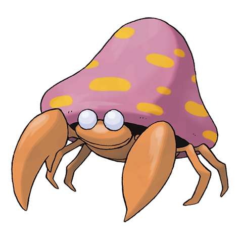

Назад
Парасект

Парасект — Покемон 1 поколения под номером 47 в Покедекс. Обитает он в регионе Канто и относится к Травяному и Жучиному типу. Это последняя стадия эволюции Покемона Параса. Известно, что Парасект массово заражает большие деревья и истощает питательные вещества из нижней части ствола и корней. Когда заражённое дерево умирает, эти Покемоны сразу перемещаются на другое дерево.
Тип:
Травяной
Жук
Эволюция
# 047 Парасект
Финальная стадия